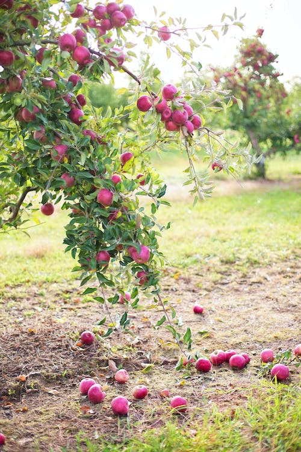

Плодовые деревья
Для садовода важен не только хороший урожай, но и то, сколько времени и сил придется потратить на его получение. А поскольку мы живем не на юге, где все растет «само», для Беларуси следует выбирать плодовые деревья зимостойких сортов.
Плодовые деревья для Беларуси
В питомнике «Сад» мы выращиваем саженцы в открытом грунте. Питомник находится в северной области Беларуси. Саженцы фруктовых деревьев, выращенные в нашем питомнике, устойчивы к перепадам температур, болезням и вредителям.
В ассортименте питомника представлены плодовые деревья:
- яблоня;
- груша;
- слива;
- вишня.
Рекомендации по посадке плодовых деревьев
Опытные садоводы советуют посадить на участке культуры с разными сроками созревания урожая. Такая комбинация фруктовых деревьев на приусадебном участке, позволит получать урожай с середины лета и до конца сезона. К тому же при разных сроках созревания урожая легче справиться с его заготовкой, переработкой и хранением.
